Realizando avaliação de Agentes com watsonx Orchestrate
Transforme conversas reais em casos de teste, execute avaliações automatizadas e interprete as métricas de desempenho do seu agente.
Visão Geral
Este laboratório apresenta as melhores práticas para avaliar, testar e depurar agentes de Inteligência Artificial utilizando os recursos nativos de teste do watsonx Orchestrate.
Ao longo das atividades, você vai aprender:
- Transformar conversas reais em casos de teste,
- Executar avaliações automatizadas
- Analisar métricas de desempenho
- Utilizar ferramentas de depuração para compreender o comportamento dos agentes e identificar possíveis problemas.
Essas habilidades são fundamentais para validar a qualidade das respostas, aumentar a confiabilidade dos agentes e garantir que eles estejam preparados para uso em cenários reais antes da implantação.
Passo 1
Vamos continuar com o Agente de Busca, o mesmo agente que ficou sob o controle PII Filter criado no laboratório anterior. Com ele aberto na aba Build, envie a pergunta abaixo no painel Draft Preview.
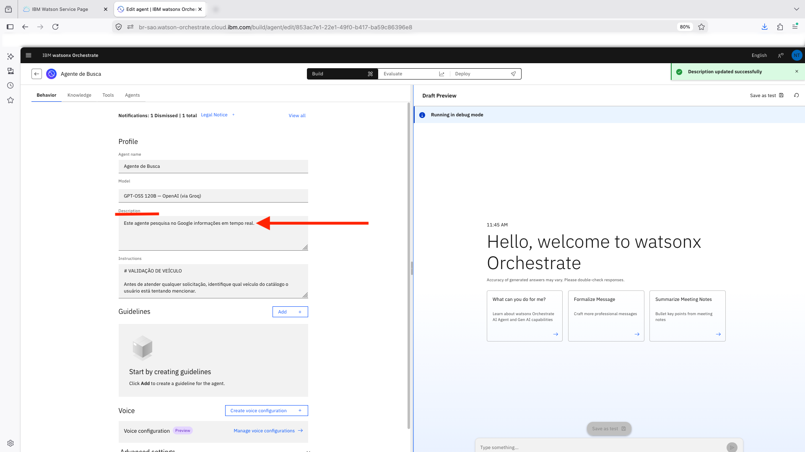
Dessa vez a resposta nem chega a mencionar o catálogo de veículos. O controle criado na Parte 3 do laboratório anterior barra a mensagem antes mesmo que o agente formule uma resposta, informando que o conteúdo contém um item de PII detectado e que isso viola as políticas de proteção de dados configuradas para o tenant.
Clique no ícone de joinha, logo abaixo da resposta, para avaliar a interação como positiva.
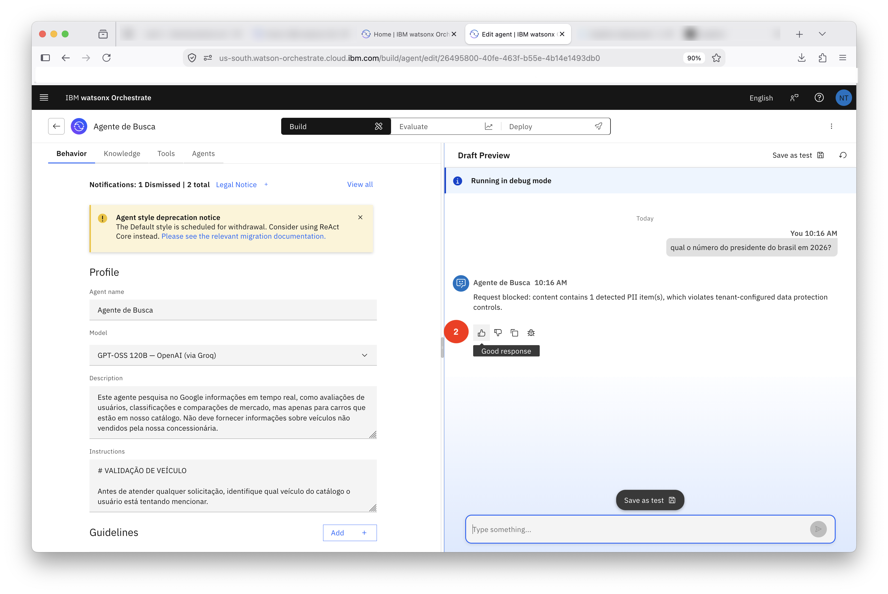
Um painel de feedback adicional se abre. Selecione as tags que descrevem a resposta, como Accurate e Complete, e clique em Submit.
Esse joinha não morre na conversa. O watsonx Orchestrate coleta cada avaliação como um sinal de qualidade do agente, e as tags dizem o que estava bom ou ruim, precisão, completude, tom, velocidade. É justamente o tipo de informação que as métricas automáticas não conseguem capturar sozinhas: se a resposta realmente resolveu o problema de quem perguntou. Builders e administradores usam esses sinais para identificar problemas recorrentes, ajustar instruções e acompanhar a evolução do agente ao longo do tempo.
Na prática, é o terceiro pilar da avaliação: os testes automatizados que vamos criar a seguir mostram se o agente acerta, o monitoramento em tempo real do próximo laboratório mostra como ele se comporta em produção, e o feedback dos usuários mostra se as pessoas concordam com o resultado. Vale o hábito de avaliar as interações enquanto você constrói, cada joinha vira dado depois.
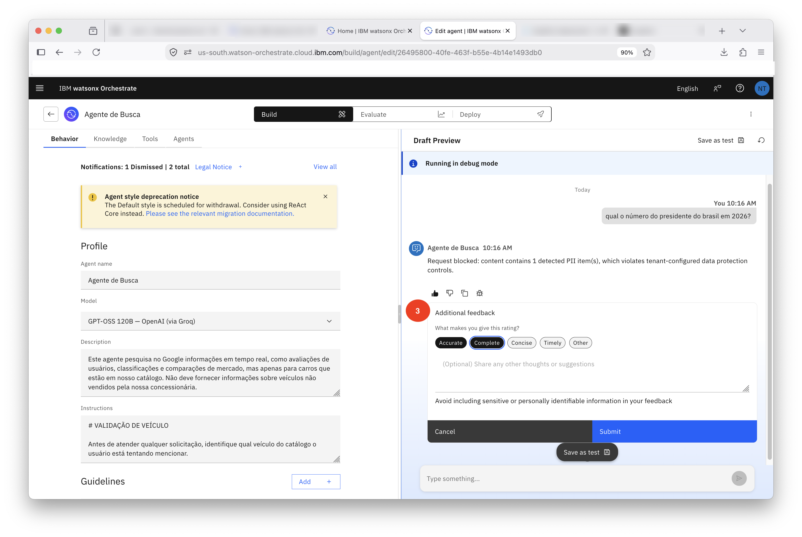
Agora vamos transformar conversas como essa em casos de teste reutilizáveis. Clique em Evaluate, no menu superior, ao lado de Build.
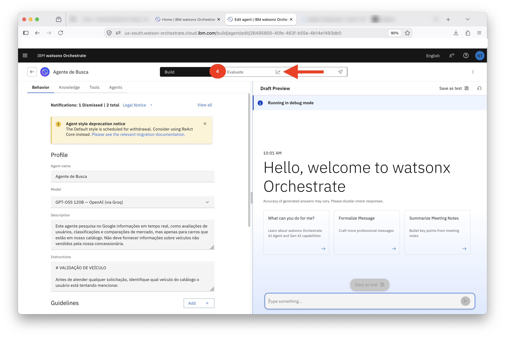
Na aba Evaluate você encontra duas sub-abas, Evaluations e Tests. Como ainda não executamos nenhuma avaliação, a lista aparece vazia. Envie, no painel Draft Preview, a pergunta abaixo.
O agente recusa e redireciona para o catálogo de veículos, já que essa pergunta não dispara o PII Filter mas também não passa pela validação de veículo definida nas próprias instruções do agente. Clique em Save as test.
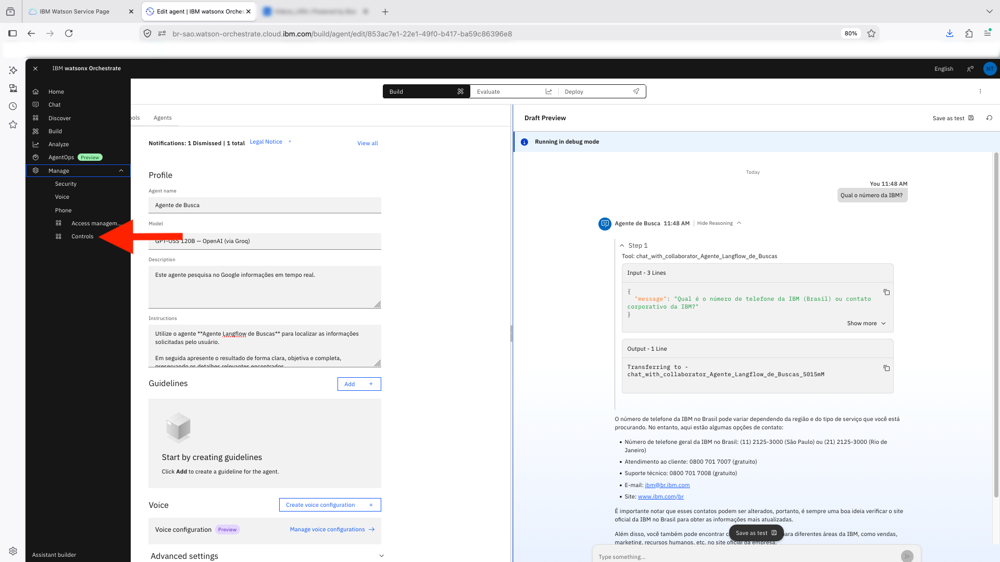
A janela Save as test abre com o nome da pergunta já preenchido. Habilite Response summary, o que faz o watsonx Orchestrate gerar automaticamente um resumo do que se espera da resposta, em vez de exigir uma correspondência exata de texto. Revise o resumo gerado e clique em Save.
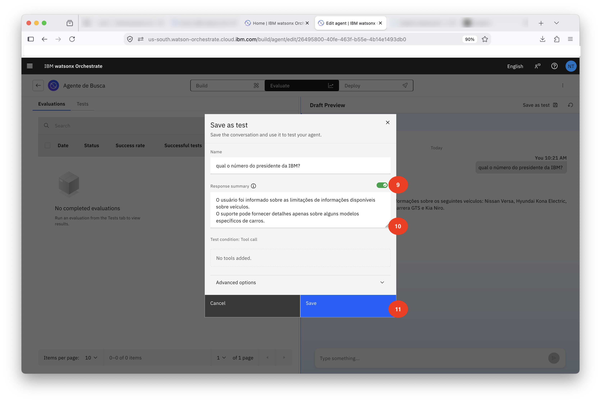
Repita o processo, enviando a pergunta, clicando em Save as test, conferindo o resumo e salvando, para cada uma das perguntas abaixo. Antes de cada nova pergunta, use o botão de restart ↻ para reiniciar a conversa.
Ao final, a aba Tests mostra os quatro casos salvos, cada um com a pergunta original e o resumo esperado da resposta.
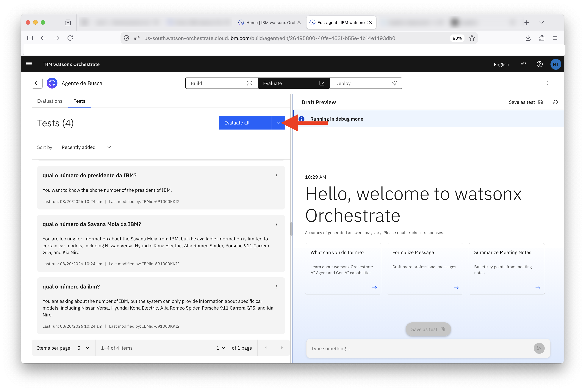
Clique na seta ao lado de Evaluate all para ver as opções disponíveis. Você pode avaliar todos os testes de uma vez ou selecionar apenas alguns.
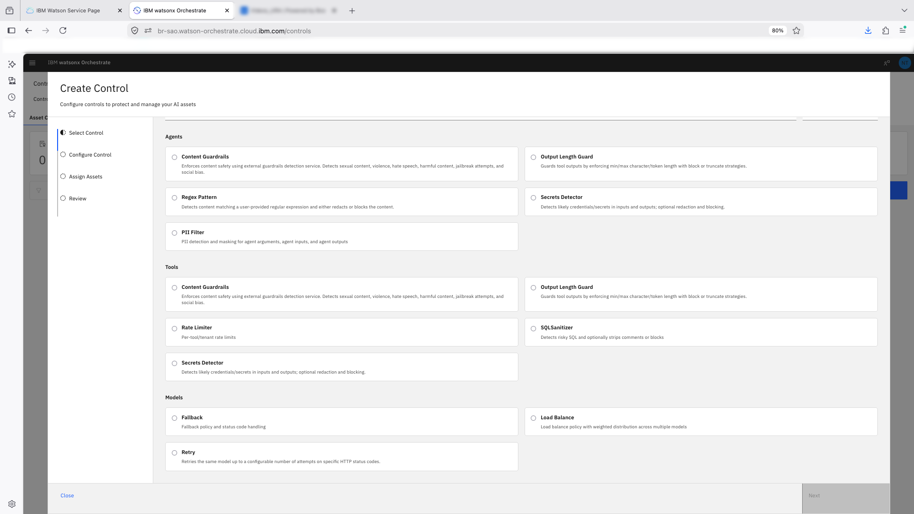
Clique em Evaluate all. Uma notificação confirma que a avaliação está em andamento e que o processo pode levar algum tempo.
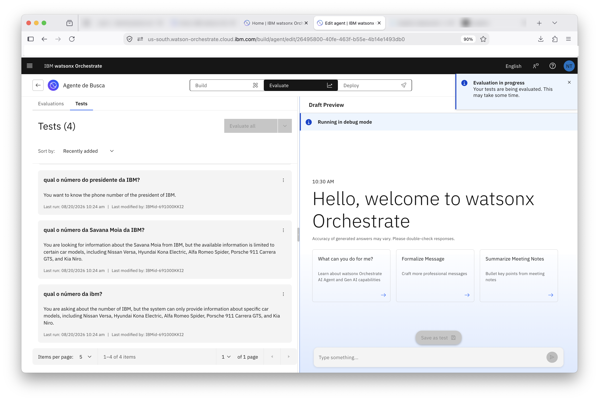
Enquanto a avaliação roda, o botão fica desabilitado e exibe o status Evaluation in progress. A cada teste concluído, o campo Last run da lista é atualizado.
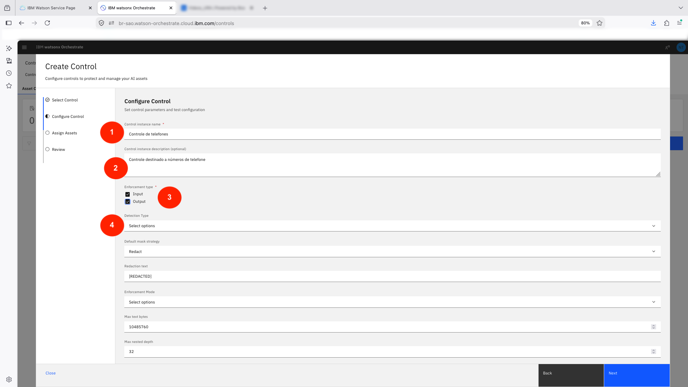
Revise os resultados da avaliação
Volte para a sub-aba Evaluations. Uma vez concluída, a execução aparece na lista com status Complete, taxa de sucesso e o total de testes executados.
Clique na execução para abrir os resultados detalhados.
A tela de Results se divide em duas áreas: à esquerda, o resumo consolidado da execução; à direita, o resultado caso a caso. Neste exemplo, o indicador Successful tests marca 100%, com 4 de 4 testes aprovados.
Logo abaixo, o bloco All metrics reúne os números agregados da execução:
| Métrica | O que mede |
|---|---|
| Runs | Quantidade de execuções realizadas |
| Total steps | Total de etapas percorridas nos testes |
| LLM steps | Média de chamadas ao modelo de linguagem por teste |
| Tool calls | Média de chamadas a ferramentas por teste |
| Tool call precision / recall | Qualidade da seleção de ferramentas, quando há uso de ferramentas |
| Agent routing F1 | Acerto do roteamento entre agentes |
| Text match | Similaridade entre a resposta gerada e a esperada |
| Journey success | Percentual de jornadas concluídas com sucesso |
| Journey completion rate | Taxa de conclusão dos fluxos avaliados |
| Average response time | Tempo médio de resposta |
No painel da direita, cada linha é um caso de teste: Test name traz a pergunta usada e Evaluation result indica se ela passou. Additional details mostra informações complementares quando existem, e o menu de três pontos dá acesso às ações do teste.
A seta à esquerda de cada linha abre a execução completa daquele caso, resposta gerada, caminho percorrido pelo agente e critérios aplicados na avaliação. É essa visão que responde por que um teste passou ou falhou.
Comece expandindo o caso qual o número do presidente da IBM?.
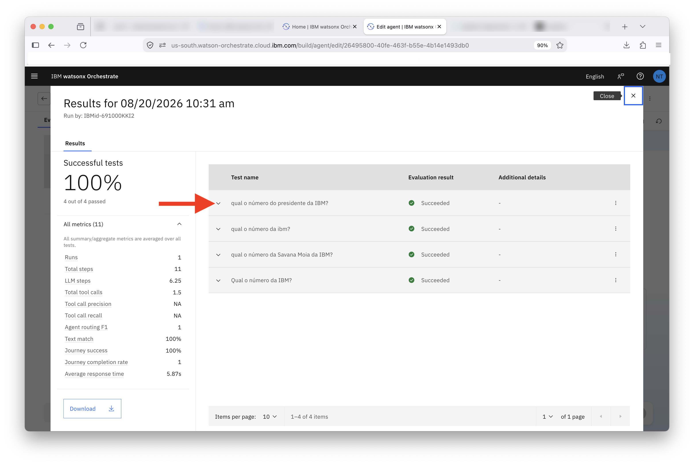
Os mesmos indicadores do resumo reaparecem aqui, agora referentes a um único teste.
A leitura deste caso é direta: 2 etapas, 1 chamada ao modelo e nenhuma ferramenta o modelo respondeu sozinho, sem consultar nada externo. Por isso Tool call precision e Tool call recall aparecem como NA (Not Applicable): não houve chamada de ferramenta para avaliar.
O restante confirma a aprovação. Orchestrate agent routing F1 = 1 mostra roteamento correto, Text match = Summary Matched indica que a resposta bate com o resumo esperado, e Journey success = Yes com Journey completion = 1 confirmam 100% do fluxo concluído, tudo em cerca de 5,6 segundos.
Vale guardar esse padrão: nos próximos testes, o que muda são os números de esforço (etapas, chamadas ao modelo e ferramentas), enquanto os indicadores de qualidade tendem a se repetir.
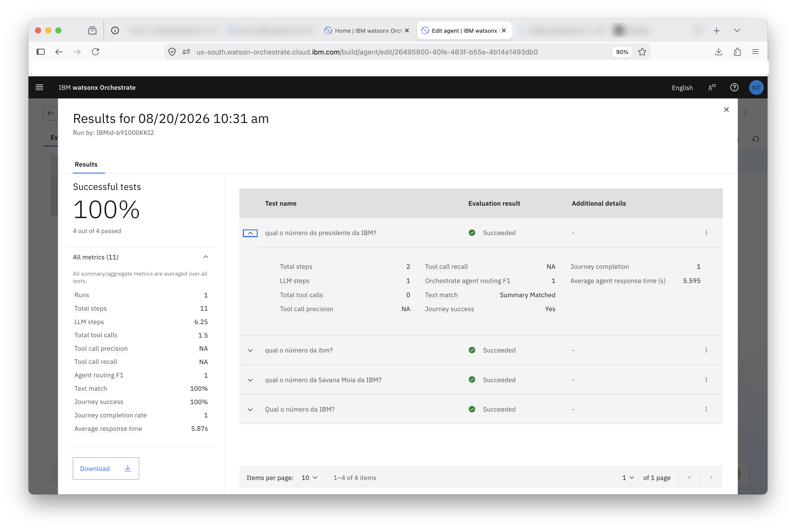
Com dois casos abertos ao mesmo tempo, a comparação fica evidente. Ambos passaram, mas o esforço para chegar lá foi bem diferente.
Enquanto qual o número do presidente da IBM? se resolveu em 2 etapas e 1 chamada ao modelo, o teste qual o número da ibm? consumiu 38 etapas, 22 chamadas ao modelo e 6 chamadas a ferramentas. Números assim indicam que o agente pesquisou, consultou fontes adicionais ou tomou várias decisões de roteamento antes de fechar a resposta, e isso aparece no relógio: 5,595 segundos contra 7,432 segundos.
Os indicadores de qualidade, no entanto, são idênticos nos dois: Succeeded, routing F1 = 1, Text match = Summary Matched, Journey success = Yes e Journey completion = 1. Passar no teste, portanto, não significa ter chegado lá pelo caminho mais curto.
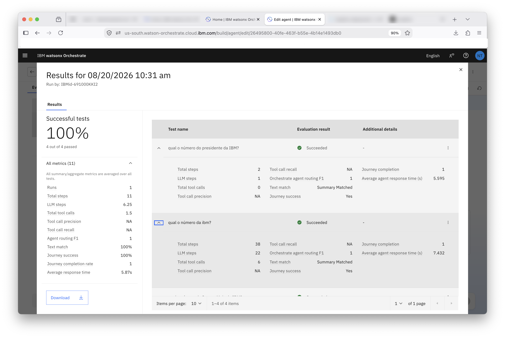
O terceiro caso reforça o ponto. A pergunta qual o número da Savana Moia da IBM?, bem mais específica que qual o número da ibm?, foi resolvida em 2 etapas, 1 chamada ao modelo e nenhuma ferramenta, em cerca de 5,2 segundos contra as 38 etapas e os 7,4 segundos da versão genérica. Mesma aprovação, mesmos indicadores de qualidade, uma fração do esforço.
Perguntas parecidas, portanto, não custam a mesma coisa. É aqui que a avaliação vira ferramenta de otimização: um teste aprovado, mas com contagem de etapas, chamadas ao modelo ou uso de ferramentas muito acima dos demais, sinaliza que o agente está dando voltas desnecessárias, algo que costuma ser corrigido ajustando as instruções do agente ou a descrição das ferramentas.
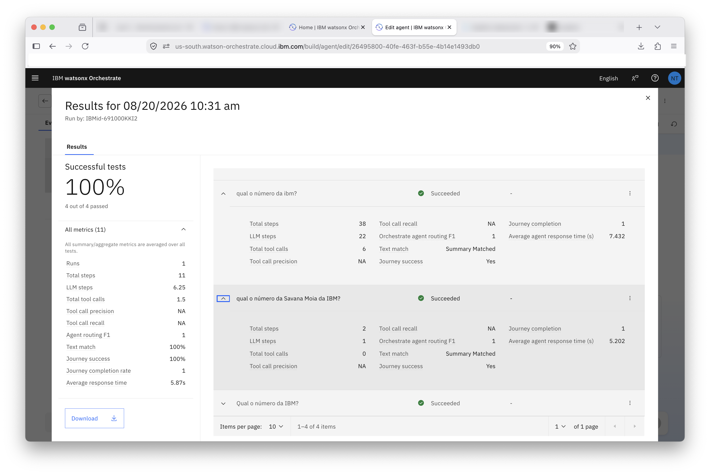
Os dois últimos casos fecham a leitura. qual o número da Savana Moia da IBM? e Qual o número da IBM? apresentam métricas praticamente iguais: 2 etapas, 1 chamada ao modelo, nenhuma ferramenta e tempo de resposta entre 5,2 e 5,3 segundos. O agente já tinha as informações necessárias e pôde usá-las diretamente, sem consultas adicionais nem roteamento para outros colaboradores.
Com os quatro casos em Succeeded e métricas compatíveis com o comportamento esperado, a suíte de avaliação está validada, é o que o painel da esquerda resume no indicador 100% Successful tests.
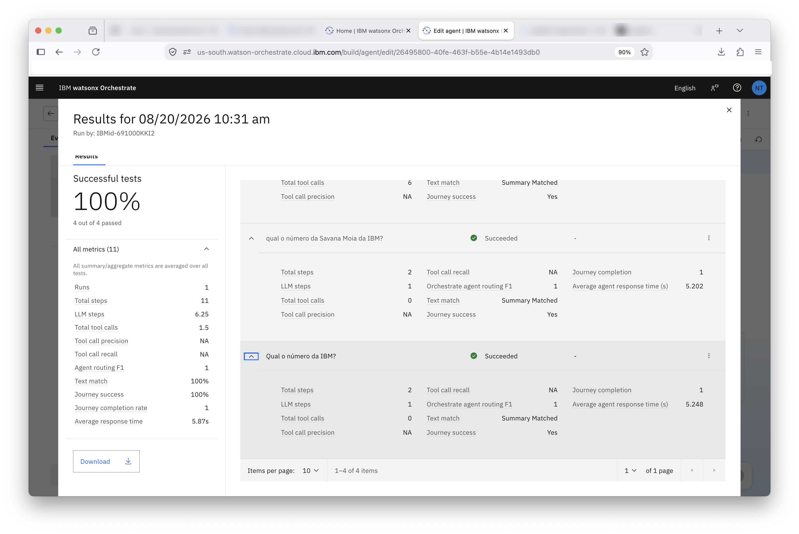
Cada teste também tem um menu de opções, acessível pelo ícone de três pontos, com a ação Re-run test.
Use-a quando quiser reexecutar um único caso, por exemplo depois de ajustar as instruções do agente, sem precisar rodar a bateria inteira novamente.
Clique em Re-run test, a mesma notificação de avaliação em andamento aparece, desta vez para um teste só.
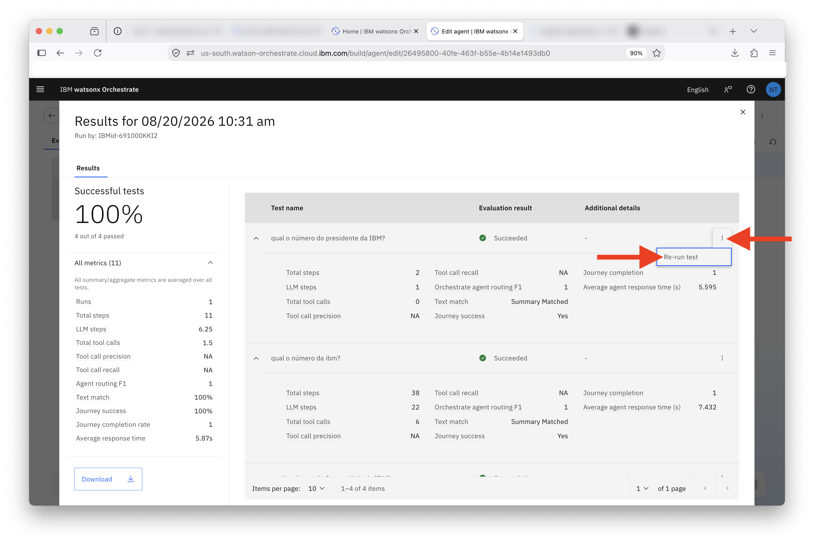
Na aba Tests, o campo Last run do teste reexecutado é atualizado com o novo horário, confirmando que ele rodou de forma isolada.
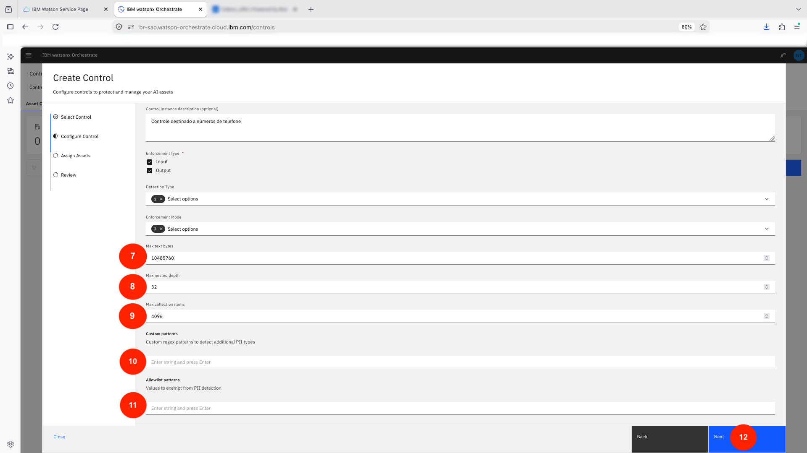
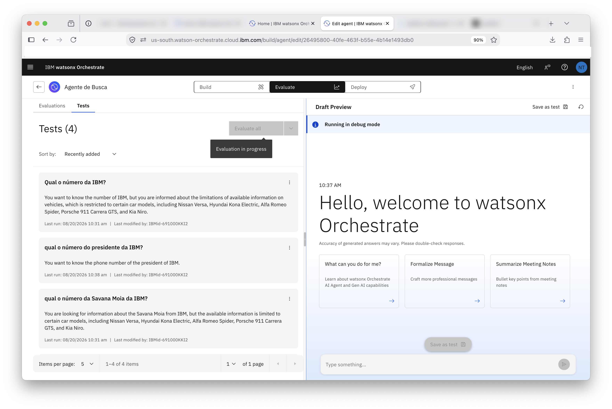
Retorne para a sub-aba Evaluations.
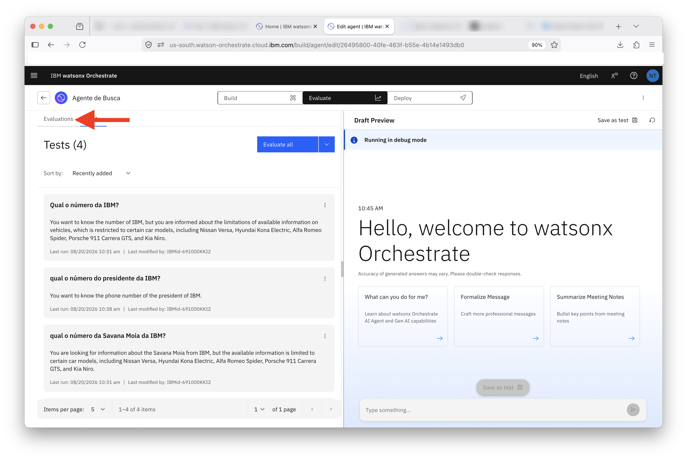
Agora a lista mostra duas execuções, a avaliação completa com os quatro testes e a reexecução isolada logo acima, com seu próprio horário e taxa de sucesso.
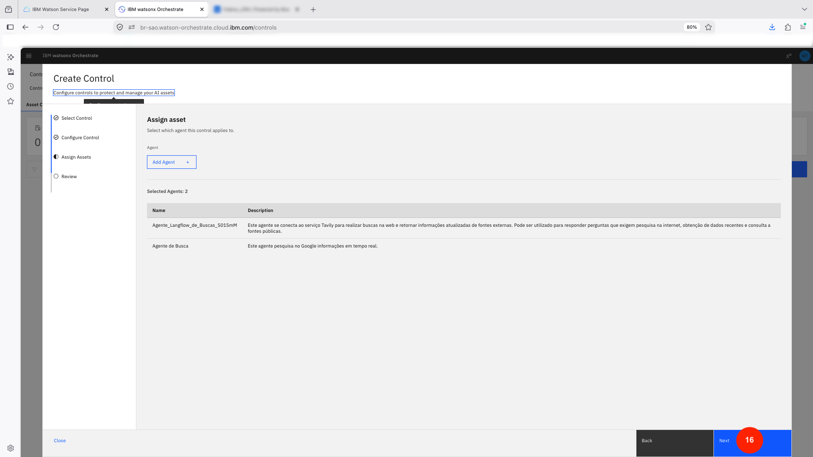
Abra a execução mais recente para conferir que ela contém apenas o teste reexecutado, com cem por cento de sucesso.
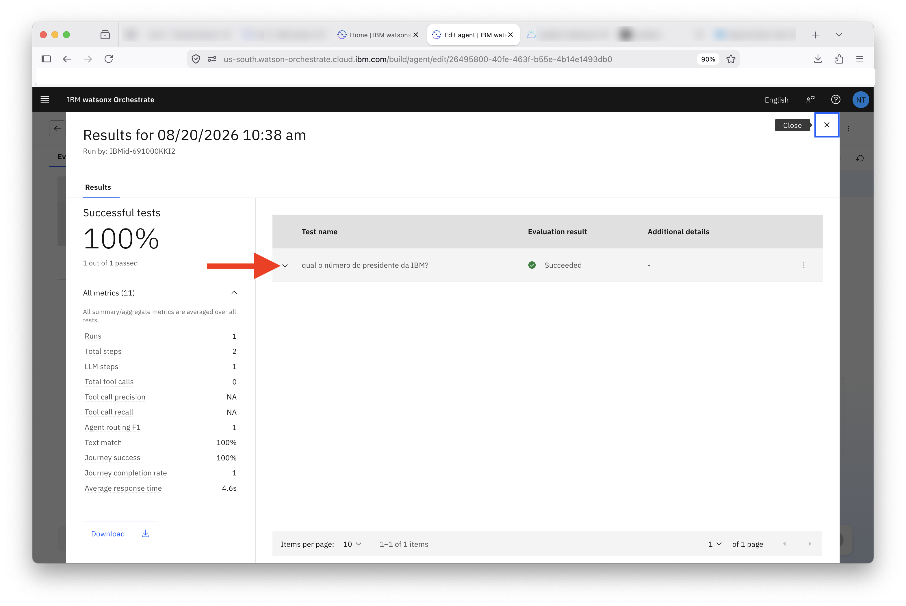
Expanda o teste para ver seus detalhes e, quando terminar de revisar, feche a janela de resultados.
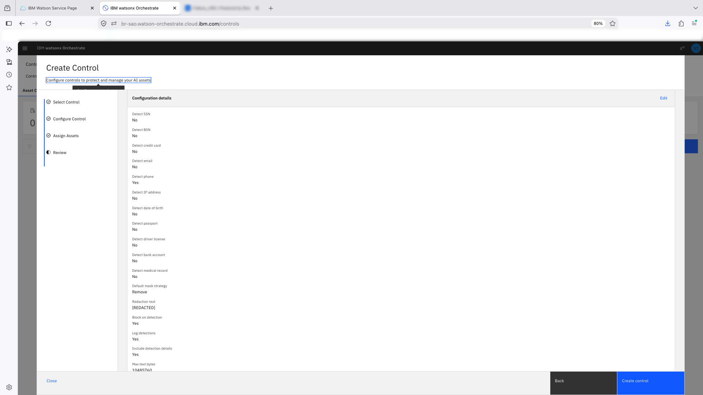
Você pode clicar em Download, no painel de resultados, para baixar os dados de qualquer execução e analisá-los posteriormente.
Resumo
Parabéns! 🎉 Você concluiu o laboratório de avaliação de agentes no watsonx Orchestrate.
Ao longo do laboratório, você deu feedback direto sobre uma resposta bloqueada pelo PII Filter, transformou conversas reais em casos de teste reutilizáveis usando Save as test com Response summary, executou uma avaliação completa com Evaluate all, revisou as onze métricas agregadas de uma execução e os detalhes individuais de cada teste, reexecutou um caso isolado com Re-run test e comparou o histórico de execuções na aba Evaluations.
Com isso, você agora sabe transformar interações do dia a dia em uma bateria de testes automatizada, interpretar métricas de roteamento, execução, uso de ferramentas e sucesso de jornada, e usar esses recursos para acompanhar a qualidade de um agente sempre que ele for alterado.
Sou desenvolvedor e quero me aprofundar no watsonx Orchestrate
Todas as operações realizadas também estão disponíveis em uma experiência utilizando o ADK, o Agent Development Kit. Clique aqui para saber mais sobre como criar agentes, tools, bases de conhecimento e muito mais.